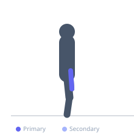
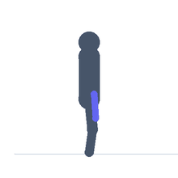

Exercise guide / Plate Pinch Hold
Plate Pinch Hold
The plate pinch hold involves gripping one or more weight plates by pinching them between the thumb and fingers, then holding for time. This directly trains pinch grip strength — the grip pattern between thumb and fingertips — which is distinct from crush grip. Strong pinch grip transfers to virtually all pulling movements and is essential for contact sports and manual labor. It is typically performed for time rather than reps.
Primary muscles
flexor carpi radialis
flexor carpi ulnaris
Secondary muscles
Equipment
Weight Plates


Starting position
- Stand upright. Hold one or two weight plates by pinching the smooth face between the thumb and fingers of one hand.
Setup
- Begin with a single 10kg or 25lb plate. Progress by adding plates. Smooth-face plates are more difficult than knurled; pinching with the smooth face out is standard.
Steps
- Step 1: Pinch the plate(s) securely between the thumb and all four fingers.
- Step 2: Lift the plate(s) off the floor or a low platform.
- Step 3: Hold for the prescribed duration, keeping the shoulder relaxed.
- Step 4: Set the plate down with control.
Coaching cues
- Squeeze through the entire hold
- Shoulder relaxed — don't shrug
- Control the set down
Breathing
- Breathe freely throughout the hold.
Range of motion
- Static hold — no movement required.
Tempo
- Hold for 20-60 seconds per hand
Common mistakes
- Resting the plate against the thigh (this reduces grip demand)
- Not maintaining consistent pinch tension throughout
Safety
- Dropping heavy plates is a risk — perform over a rubber mat or low surface
Training
- strength: 3–5 reps
- strength: 3–5 sets
- Rest: {'strength': 120}